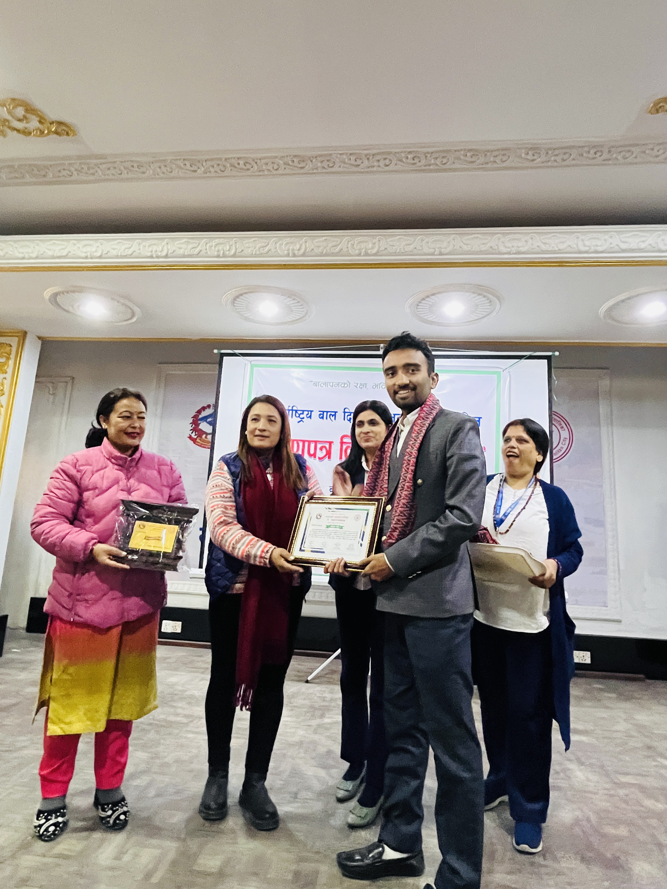
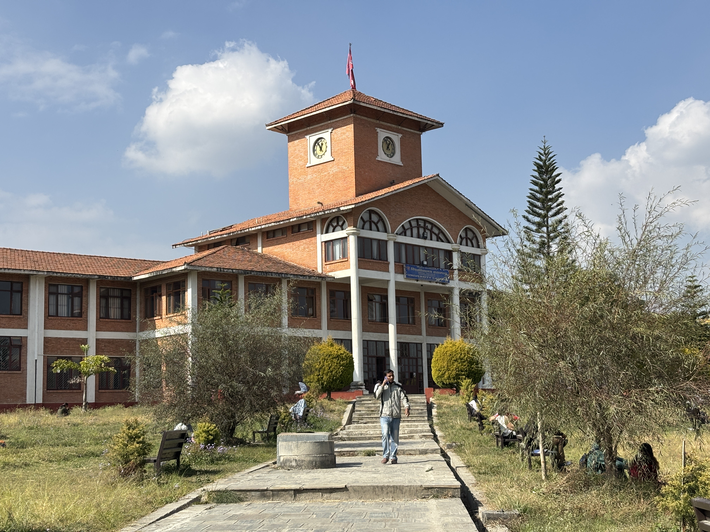
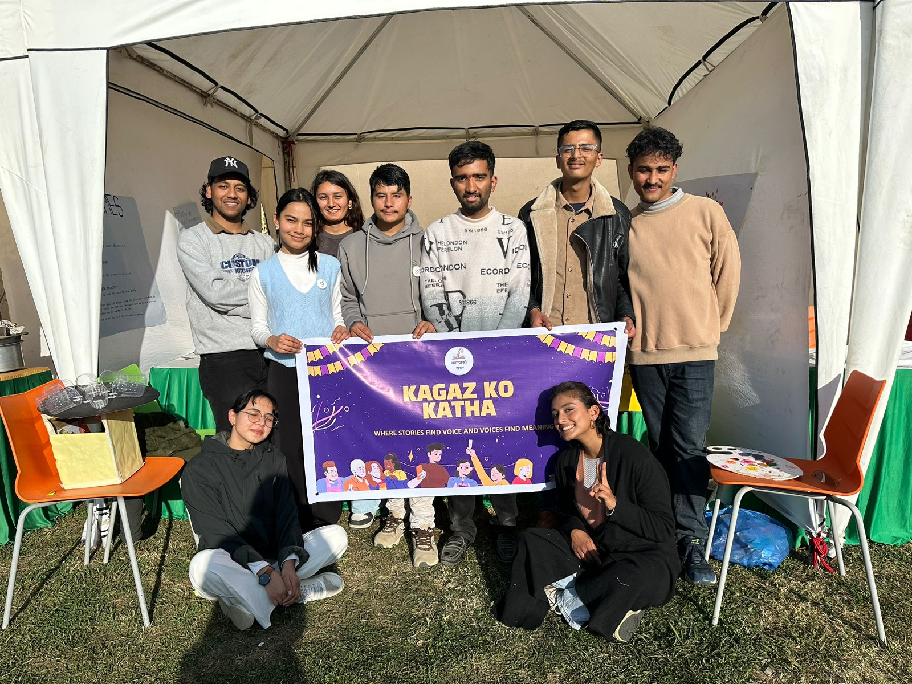
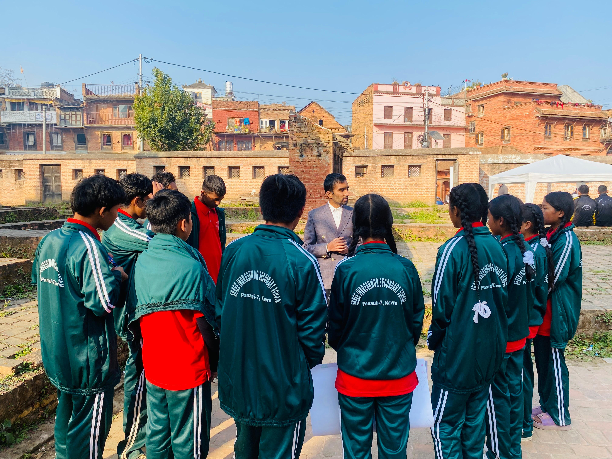
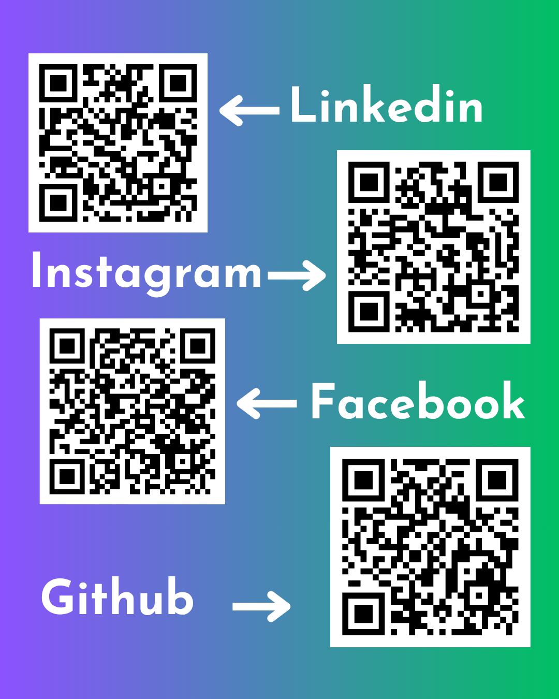

Prakash Sharma
Beyond Numbers | Data Science, AI & Human Progress

About Me
I'm Prakash Sharma, a Data Science student from Nepal, a curious learner, and a relentless questioner. I'm passionate about discovering patterns in data and understanding the deeper connections between human behavior, society, and progress.
Beyond data science, my interests span mathematics, physics, philosophy, psychology, diplomacy, and leadership. I enjoy exploring both Eastern wisdom and Western reasoning, seeking a balance between logic and meaning.
I believe in evidence, integrity, and continuous learning. For me, education is not just about gaining knowledge but about developing the ability to think critically, act responsibly, and contribute meaningfully to society.
Education
Tribhuvan University
Bachelor’s in Data Science
Tribhuvan University (TU) — School of Mathematical Sciences
Undergraduate Studies
10 + 2 Education — Biology Science
Aroma College
Science Stream
Secondary Education (Up to Grade 10)
Narayani Model Secondary School
School Education

Experience
- Supported program coordination and youth engagement initiatives.
- Contributed to activities that encourage learning, collaboration, and cross-cultural understanding.
- Coordinated group activities and supported collaborative project work.
- Helped organize tasks, facilitate teamwork, and contribute to project objectives.
- Tutor (SEE & 10+2)
Job Position
Data Analyst
Analyze project-related data to identify patterns, extract meaningful insights, and support evidence-based decision-making. Work with data collection, cleaning, analysis, and visualization to evaluate project progress and communicate findings effectively.
Integral Minds
Integral Minds (I’M) is a youth-led initiative built on the belief that meaningful progress begins with the mind. Its core purpose is to nurture critical thinking, ethical leadership, effective communication, and innovation while connecting curious young people to exchange ideas, challenge perspectives, and transform knowledge into meaningful social impact.
Learn I'M
Explore mathematics tutorials, data science workflows, and philosophical perspectives through my learning channel.
Explore the Channel Read My Views
Volunteer Work


Book Bus Fellowship
Contributed to a reading and learning culture by engaging with literacy initiatives, knowledge sharing, and community-based learning. Developed a deeper appreciation for the role of books in empowering young minds.
Coordinator — Kagaj Ko Katha
Coordinated activities related to reading, literature, and knowledge sharing, encouraging meaningful discussions and community engagement. Helped foster a culture of reading, reflection, and intellectual growth.
Vice President — Data Science Club
Support the club’s leadership and strategic initiatives to foster a data-driven learning culture. Promote peer learning, organize technical activities, and encourage collaboration in data science, artificial intelligence, and research while creating opportunities for students to develop practical skills and explore emerging technologies.

Get In Touch
Email: educationbypra330@gmail.com
Website: prakashsharma21.com.np
Linkedin: prakashahar00